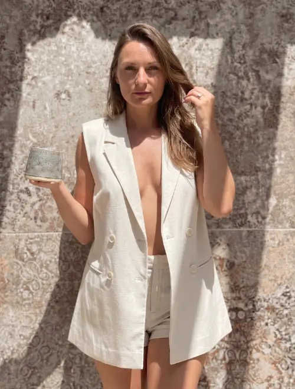
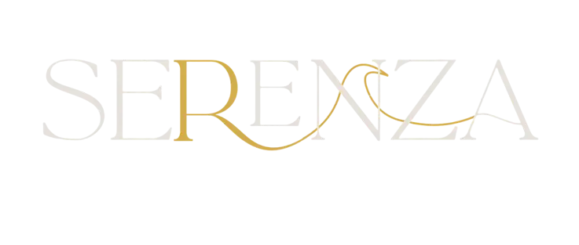
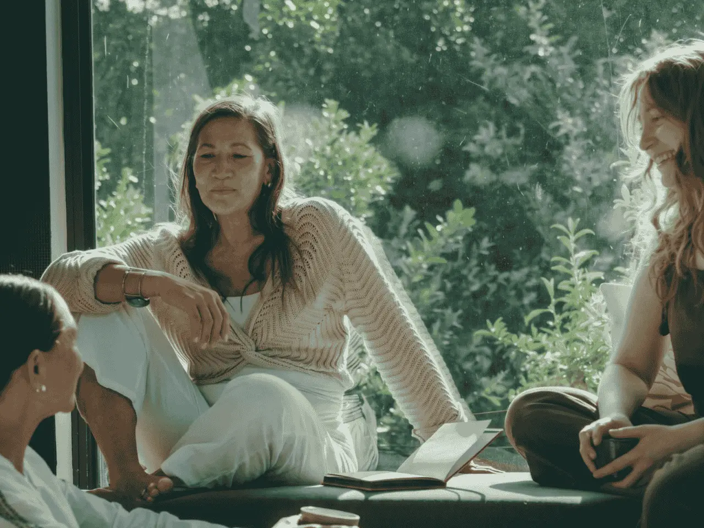
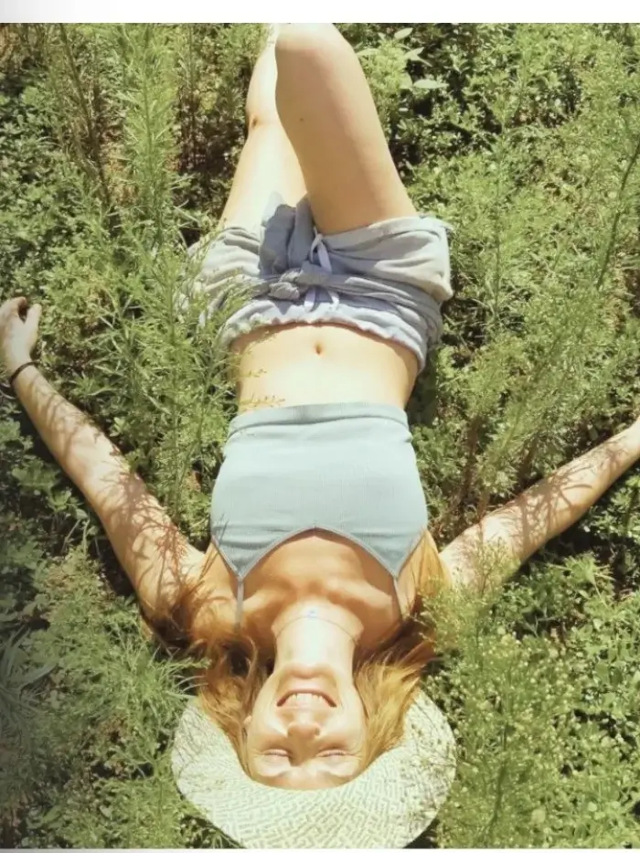

No es que no lo veas.
Hay una forma de vivir
en la que ya no te reconoces.
Y aun así, la sigues sosteniendo.
No es falta de claridad.
Es el sistema desde el que estás intentando sostener trabajo, relaciones y decisiones sin incluirte a ti.
Ahí es donde trabajamos.
- +5 años acompañando procesos
- +100 mujeres acompañadas
- Respiración funcional certificada
- Thetahealing · Terapeuta emocional
- Facilitadora de cacao ancestral
Reconocimiento
Si algo aquí te resuena,
es porque ya lo estás viendo.
No trabajo con quien empieza. Trabajo con quien ya ha hecho camino y sigue sosteniendo lo mismo.
Sabes que no es por ahí
Estás en una conversación, en tu trabajo, en una decisión… y hay algo dentro que te dice: esto no es. Lo ves. Lo sientes. Pero no dices nada. Sigues. Te adaptas. Cumples. Y luego te vas con esa sensación en el cuerpo de haberte fallado otra vez.
Te priorizas… a ratos
Hay días en los que lo haces distinto. Te eliges. Pones un límite. Paras. Y lo notas. El cuerpo cambia. Pero no se sostiene. A los pocos días, vuelves a ceder, a decir que sí cuando es no, a colocarte después de todo lo demás. Y no entiendes por qué, si lo ves tan claro.
Hay algo que tira de ti
No es que no sepas hacerlo diferente. Es que, en el momento en el que vas a hacerlo, lo notas en el cuerpo. Se cierra. Se activa. Dudas. Y vuelves a lo conocido. A lo que ya no encaja… pero sabes sostener. No es consciente. Pero está dirigiendo más de lo que crees.
El método
No va de soltar o dejar ir.
Va de comprender qué pasa en ti cuando intentas sostenerlo… y no lo consigues.
Hay un momento muy concreto: sabes lo que tienes que hacer, vas a hacerlo, y algo en ti cambia. Lo notas en el cuerpo. Dudas. Lo pospones. Te distraes con otra cosa. Y vuelves a lo mismo. No es falta de capacidad. Es lo que se activa en ti, de forma inconsciente, en ese punto. Ahí es donde trabajamos.
Regulación
En ese momento, tu sistema se activa. Se acelera, se cierra o se pone en alerta. Trabajamos sobre esa respuesta: respiración, activación y regulación. Porque si eso no cambia, vas a seguir saboteándote en el mismo punto.
Orden
No es lo que haces. Es el lugar que le das a cada cosa en tu vida. Trabajo, relaciones, exigencia. Cuando todo ocupa más espacio que tú, acabas sosteniendo una vida en la que tú no estás. Reordenamos prioridades para que dejes de ponerte después de todo lo demás.
Coherencia
No se trata de hacerlo perfecto. Se trata de que, hagas lo que hagas, no sientas que te estás traicionando. Trabajamos hasta que lo que haces forme parte de una identidad encarnada y coherente.
Primera conexión sin coste
Antes de empezar, veo contigo en qué punto estás.
Sin estructura de sesión. Sin compromiso. Solo claridad de si esto es para ti.
Proceso 1:1 · 3 meses
Mentoría
Privada 1:1
Dejar de sostener tu vida desde el mismo lugar. Ocupar tu lugar en ella.
No trabajamos lo que ves. Trabajamos lo que lo está sosteniendo.
Tu carga acumulada. Las incoherencias pequeñas que se han vuelto invisibles. El sistema nervioso que interpreta cada cambio como amenaza y te devuelve al lugar conocido aunque ya no encaje.
No necesitas más disciplina. Necesitas menos carga interna.
- 12 sesiones 1:1 (1 por semana durante 3 meses)
- Primera conexión inicial — analizo tu momento, patrones y estructuro el proceso
- Acompañamiento entre sesiones — cuando algo importante esté pasando, puedes escribirme
- Trabajo directo sobre patrones — no solo los ves, los cambias
- Reordenamiento de prioridades aplicado a tu vida real
- Regulación aplicada — herramientas para que tu cuerpo no te saque del punto
- Integración en trabajo, relaciones, decisiones, límites
- Cacao como puente en momentos concretos (cuando aplica)
Valor del proceso: 1.888€
1.200€
Precio de lanzamiento · Tiempo limitadoPago completo o en 2, 3 o 4 cuotas.
Primera cuota antes de iniciar. Última antes de finalizar.
Con firma de acuerdo de compromiso.

"No necesitas más herramientas. Necesitas dejar de sostener tu vida desde el mismo sistema."
Señales de que esto es para ti
- Ya has hecho trabajo interno. Entiendes lo que pasa. Pero tu sistema sigue respondiendo igual.
- Priorizas tu trabajo, familia y relaciones antes que a ti misma, de forma sistemática
- Sabes lo que necesitas pero en el momento de sostenerlo, te echas hacia atrás
- Llevas tiempo funcionando bien pero desde un lugar que ya no es tuyo
22–24 Mayo 2026 · Cardedeu, Barcelona

Tres días donde el orden que sostienes fuera se detiene
para que dentro… todo encuentre su lugar.

No es un retiro de descanso.
Es una parada real donde el sistema baja, la percepción cambia y lo que llevas tiempo sin ver… aparece.
- Alojamiento completo
- Alimentación
- Cacao ceremonial
- Respiración guiada
- Trabajo de patrones
- Círculos de palabra
Sólo 12 plazas · Ver todo el detalle

acompañadas
práctica
propio
especializadas
Sobre mí
No trabajo con lo que dices que te pasa. Trabajo con lo que lo está sosteniendo.
"Hay un punto en el que ya no falta información.
Falta estructura interna para sostenerla."
Mi trabajo nace ahí. No en la teoría. No en el desarrollo personal. En el momento en el que ves lo que tienes que hacer y aun así no lo haces.
Yo estuve ahí. Una ruptura me desordenó por completo. No era solo la relación. Era todo lo que se sostenía desde ese lugar. Identidad. Dirección. Forma de vivir. Y en ese punto entendí algo que no se enseña: no es falta de claridad. Es falta de regulación para sostenerla.
Desde entonces, todo mi trabajo se construye sobre eso. Acompaño a mujeres que ya han hecho trabajo interno. Que entienden. Que han ido a terapia. Que han probado distintas herramientas. Y que, aun así, siguen repitiendo lo mismo. No por falta de capacidad. Sino porque su sistema sigue funcionando igual.
El mar no es un recurso visual en mi vida. Es estructura. El surf me enfrenta constantemente a lo que no controlo. A sostenerme sin rigidez. A leer el sistema en tiempo real. Eso define también cómo acompaño.
Formación
Lo que dicen ellas
Mujeres que ya decidieron
Llegué creyendo que necesitaba más estrategia. Salí entendiendo que lo que necesitaba era claridad. Son cosas completamente distintas. Jenifer me ayudó a ver esa diferencia.
Ana M.Directora de empresa · Madrid
El proceso con Jenifer fue el antes y el después. No es coaching, no es terapia. Es algo que no tenía nombre hasta que lo viví y que cambió cómo tomo decisiones todos los días.
Laura G.Emprendedora · Barcelona
Fui al retiro con una decisión que llevaba dos años postergando. La tomé el segundo día. Tres meses después sigo sosteniendo esa decisión y estoy más tranquila que en años.
Sandra P.Líder de equipo · Valencia
El siguiente paso
No es que no sepas qué hacer.
Es que tu sistema no está preparado para sostenerlo.
Una primera conexión. Sin sesión, sin compromiso. Veo contigo qué está sosteniendo lo que no consigues cambiar.
"Cuando esto cambia,
todo se reordena."